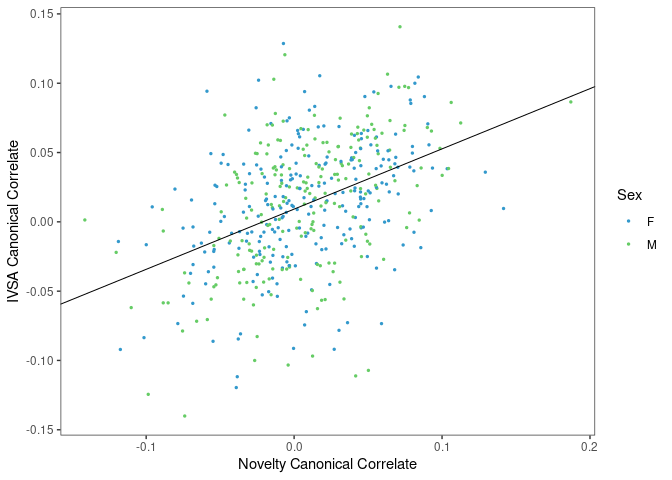

Last updated: 2024-03-29
Checks: 7 0
Knit directory: rta/
This reproducible R Markdown analysis was created with workflowr (version 1.7.0). The Checks tab describes the reproducibility checks that were applied when the results were created. The Past versions tab lists the development history.
Great! Since the R Markdown file has been committed to the Git repository, you know the exact version of the code that produced these results.
Great job! The global environment was empty. Objects defined in the global environment can affect the analysis in your R Markdown file in unknown ways. For reproduciblity it’s best to always run the code in an empty environment.
The command set.seed(20200501) was run prior to running
the code in the R Markdown file. Setting a seed ensures that any results
that rely on randomness, e.g. subsampling or permutations, are
reproducible.
Great job! Recording the operating system, R version, and package versions is critical for reproducibility.
Nice! There were no cached chunks for this analysis, so you can be confident that you successfully produced the results during this run.
Great job! Using relative paths to the files within your workflowr project makes it easier to run your code on other machines.
Great! You are using Git for version control. Tracking code development and connecting the code version to the results is critical for reproducibility.
The results in this page were generated with repository version e35887d. See the Past versions tab to see a history of the changes made to the R Markdown and HTML files.
Note that you need to be careful to ensure that all relevant files for
the analysis have been committed to Git prior to generating the results
(you can use wflow_publish or
wflow_git_commit). workflowr only checks the R Markdown
file, but you know if there are other scripts or data files that it
depends on. Below is the status of the Git repository when the results
were generated:
Ignored files:
Ignored: .Rhistory
Ignored: .Rproj.user/
Ignored: code/.Rapp.history
Ignored: data/.Rhistory
Ignored: data/RDS/
Ignored: run/
Untracked files:
Untracked: LICENSE
Untracked: Rplot.pdf
Untracked: SENSI_chr7_snps.R
Untracked: Untitled.R
Untracked: analysis/17_mapping_interpretation_old.Rmd
Untracked: analysis/temp.txt
Untracked: code/DO_IVSA_SALINE_pleiotropy.R
Untracked: code/DO_IVSA_SENS_pleiotropy.R
Untracked: code/DO_SENS_SALINE_pleiotropy.R
Untracked: code/DO_eQTL_perms.R
Untracked: code/DO_eQTL_score_calc.R
Untracked: code/SENSI_chr7_snps.R
Untracked: code/STAR_RSEM_416.sh
Untracked: code/eQTL_plotting_DO_striatum_416.R
Untracked: code/ggplot_pub_themes.R
Untracked: code/pleitropy_analysis.sbatch
Untracked: code/pleitropy_saline_analysis.sbatch
Untracked: code/pleitropy_sensi_saline_analysis.sbatch
Untracked: code/rta_mapping_figure_leftover.R
Untracked: data/20_elastic_mv_results.csv
Untracked: data/20_elasticnet_predictions.RDS
Untracked: data/DO_416_DGEList.RDS
Untracked: data/DO_416_DGEList_unfiltered (michael.saul@jax.org 2).RDS
Untracked: data/DO_416_DGEList_unfiltered (michael.saul@jax.org 3).RDS
Untracked: data/DO_416_DGEList_unfiltered (michael.saul@jax.org 4).RDS
Untracked: data/DO_416_DGEList_unfiltered (michael.saul@jax.org).RDS
Untracked: data/DO_416_DGEList_unfiltered.RDS
Untracked: data/DO_416_ERCC_DGEList.RDS
Untracked: data/DO_416_ERCC_cpm.RDS
Untracked: data/DO_416_normrt.RDS
Untracked: data/DO_416_pheno.RDS
Untracked: data/DO_416_pheno_allgenes.RDS
Untracked: data/DO_416_voom (michael.saul@jax.org).RDS
Untracked: data/DO_416_voom.RDS
Untracked: data/DO_416_voom_allgenes (michael.saul@jax.org 2).RDS
Untracked: data/DO_416_voom_allgenes (michael.saul@jax.org).RDS
Untracked: data/DO_416_voom_allgenes.RDS
Untracked: data/DO_416_voom_cpresiduals.RDS
Untracked: data/DO_AQ_active_CoV_toptable_annotated.RDS
Untracked: data/DO_AQ_lever_ratio_toptable_annotated.RDS
Untracked: data/DO_AQ_mean_inf_toptable_annotated.RDS
Untracked: data/DO_AQ_rate_toptable_annotated.RDS
Untracked: data/DO_IVSA_SALINE_pleio_lods.RDS
Untracked: data/DO_IVSA_SENS_pleio_lods.RDS
Untracked: data/DO_IVSA_SENS_pleio_pvl.RDS
Untracked: data/DO_IVSA_acquisition_cancor_df.RDS
Untracked: data/DO_IVSA_acquisition_logit_df.RDS
Untracked: data/DO_IVSA_acquisition_logit_glm.RDS
Untracked: data/DO_IVSA_all_cancor_df.RDS
Untracked: data/DO_IVSA_all_cancor_df_2024-03-27.RDS
Untracked: data/DO_IVSA_all_cancor_df_2024-03-29.RDS
Untracked: data/DO_IVSA_data.RDS
Untracked: data/DO_IVSA_data_2024-03-29.RDS
Untracked: data/DO_IVSA_novelty_cancor_ALL.RDS
Untracked: data/DO_IVSA_novelty_cancor_ALL_2024-03-29.RDS
Untracked: data/DO_IVSA_novelty_cancor_AQ.RDS
Untracked: data/DO_IVSA_novelty_data.RDS
Untracked: data/DO_IVSA_novelty_data_2024-03-29.RDS
Untracked: data/DO_IVSA_prediction_ACQUISITION_logit.RDS
Untracked: data/DO_IVSA_prediction_ACQUISITION_logit_2021-01-04.RDS
Untracked: data/DO_IVSA_prediction_ALL_cancor.RDS
Untracked: data/DO_IVSA_prediction_ALL_cancor_2021-01-04.RDS
Untracked: data/DO_IVSA_prediction_ALL_cancor_old.RDS
Untracked: data/DO_IVSA_prediction_AQ_cancor.RDS
Untracked: data/DO_IVSA_prediction_AQ_cancor_2021-01-04.RDS
Untracked: data/DO_IVSA_prediction_a1_ACQUISITION_logit.RDS
Untracked: data/DO_IVSA_prediction_a2_AQ_cancor.RDS
Untracked: data/DO_IVSA_prediction_a3_ALL_cancor.RDS
Untracked: data/DO_IVSA_prediction_a3_ALL_cancor_
Untracked: data/DO_IVSA_prediction_a3_ALL_cancor_2024-03-25.RDS
Untracked: data/DO_IVSA_prediction_a3_ALL_cancor_2024-03-27.RDS
Untracked: data/DO_IVSA_prediction_a3_ALL_cancor_2024-03-29.RDS
Untracked: data/DO_IVSA_prediction_a4_male_ALL_cancor.RDS
Untracked: data/DO_IVSA_prediction_a5_female_ALL_cancor.RDS
Untracked: data/DO_IVSA_raw_data.RDS
Untracked: data/DO_IVSA_transformed_data.RDS
Untracked: data/DO_LIMS_data.RDS
Untracked: data/DO_RTG_a1_new.qtl.RData
Untracked: data/DO_RTG_a1_new_1000x.qtlpermu.RData
Untracked: data/DO_RTG_a1_new_mapping_1000x.RData
Untracked: data/DO_RTG_a2_new.qtl.RData
Untracked: data/DO_RTG_a2_new_1000x.qtlpermu.RData
Untracked: data/DO_RTG_a2_new_mapping_1000x.RData
Untracked: data/DO_RTG_a3_new.qtl.RData
Untracked: data/DO_RTG_a3_new_1000x.qtlpermu.RData
Untracked: data/DO_RTG_a3_new_mapping_1000x_01.RData
Untracked: data/DO_RTG_a3_new_mapping_1000x_02.RData
Untracked: data/DO_RTG_a4_new.qtl.RData
Untracked: data/DO_RTG_a5_new.qtl.RData
Untracked: data/DO_RTG_elasticnet_new.qtl.RData
Untracked: data/DO_RTG_elasticnet_new_mapping_1000x.RData
Untracked: data/DO_RTG_project_df_for_mapping.RDS
Untracked: data/DO_RTG_project_df_for_mapping_2020-11-06.RDS
Untracked: data/DO_RTG_project_df_for_mapping_a2.RDS
Untracked: data/DO_RTG_project_df_for_mapping_sexspecific.RDS
Untracked: data/DO_SENS_SALINE_pleio_lods.RDS
Untracked: data/DO_cocaine_measures_data.RDS
Untracked: data/DO_demographic_data_df.RDS
Untracked: data/DO_eigengene_significance.RDS
Untracked: data/DO_eigengenes.RDS
Untracked: data/DO_elasticnet_GEX_pvalue_histograms.RData
Untracked: data/DO_highcor_cpresiduals_datatable.RDS
Untracked: data/DO_holeboard_data_df.RDS
Untracked: data/DO_holeboard_summarized.RDS
Untracked: data/DO_lightdark_data_df.RDS
Untracked: data/DO_mQTL_peaks.RDS
Untracked: data/DO_mQTL_scan1s.RDS
Untracked: data/DO_module_membership.RDS
Untracked: data/DO_novelplace_data_df.RDS
Untracked: data/DO_novelty_COC_cancor.RDS
Untracked: data/DO_novelty_SAL_cancor.RDS
Untracked: data/DO_novelty_data.RDS
Untracked: data/DO_novelty_data_2024-03-29.RDS
Untracked: data/DO_novelty_response_data.RDS
Untracked: data/DO_novelty_response_data_for_RTG.RDS
Untracked: data/DO_novelty_response_data_with_transform.csv
Untracked: data/DO_novelty_saline_cocaine_cancor.RDS
Untracked: data/DO_openfield_data_df.RDS
Untracked: data/DO_paraclique_data.el
Untracked: data/DO_paraclique_eigengenes.RDS
Untracked: data/DO_paraclique_significance_elasticnet.RDS
Untracked: data/DO_paracliques.RDS
Untracked: data/DO_paracliques_significance.RDS
Untracked: data/DO_ploidy_calls.RDS
Untracked: data/DO_pmap.RDS
Untracked: data/DO_pvalue_histograms.RData
Untracked: data/DO_rtg_a1_toptable_annotated.RDS
Untracked: data/DO_rtg_a2_toptable_annotated.RDS
Untracked: data/DO_rtg_a3_toptable_annotated.RDS
Untracked: data/DO_rtg_m1_toptable_annotated.RDS
Untracked: data/DO_rtg_m2_toptable_annotated.RDS
Untracked: data/DO_rtg_m3_toptable_annotated.RDS
Untracked: data/DO_saline.qtl.RData
Untracked: data/DO_saline_measures_data.RDS
Untracked: data/DO_sensi_cocaine.qtl.RData
Untracked: data/DO_str_2016_eQTL.RData
Untracked: data/DO_str_2016_gm4qtl2.zip
Untracked: data/DO_str_2016_gm4qtl2_intensities.fst
Untracked: data/DO_voom_cpresiduals_NArm.RDS
Untracked: data/DO_wgcna.RDS
Untracked: data/IVSA_RTG_a3_blup.pdf
Untracked: data/IVSA_h2_2019-11-18.tsv
Untracked: data/IVSA_metadata_sheet.RDS
Untracked: data/ME16_edges.tsv
Untracked: data/Mus_musculus.GRCm38.94.parsed.RDS
Untracked: data/Paraclique_19_MF_AMIGO.txt
Untracked: data/RTG_QTL_peaks.RDS
Untracked: data/RTG_figure.RDS
Untracked: data/SENSI_chr7_snps.RData
Untracked: data/SENS_RTG/
Untracked: data/Tyr2_genotypes.RDS
Untracked: data/Tyr_genotypes.RDS
Untracked: data/blup_chr7_DO_RTG_a3.RDS
Untracked: data/blup_spearman_cors.RData
Untracked: data/cc_variants/
Untracked: data/chr18_QTL_results.RDS
Untracked: data/chr4_QTL_results.RDS
Untracked: data/chr7_a3_QTL_results.RDS
Untracked: data/chr7_blups_with_rtg.RDS
Untracked: data/chr7_cocaine_BLUP.RDS
Untracked: data/chr7_gene_blup.RDS
Untracked: data/chr7_qtl_cors_with_spearman_blups.RDS
Untracked: data/chr7_sensi_cocaine_BLUP.RDS
Untracked: data/cis/
Untracked: data/eQTL_annotated_peaks.RDS
Untracked: data/eQTL_plots.RData
Untracked: data/figures/
Untracked: data/founders_key/
Untracked: data/gigamuga/
Untracked: data/gwas/
Untracked: data/info/
Untracked: data/m2G.a2.RTG.chr4snp.RData
Untracked: data/mapping/
Untracked: data/mapping_from_hao/
Untracked: data/mpd_measures_saline.txt
Untracked: data/mpd_measures_saline_cocaine.txt
Untracked: data/perms/
Untracked: data/pleio_df.RDS
Untracked: data/qtl2/
Untracked: data/raw/
Untracked: data/resources/
Untracked: data/tads_loops/
Untracked: data/transcripts/
Untracked: data/variants/
Untracked: logs/
Untracked: new_RTG_a3.jpeg
Untracked: output/DO_module_membership.tsv
Untracked: output/DO_paraclique_df.tsv
Untracked: output/RDS/
Untracked: output/RTG_out/
Untracked: output/docs_backup_2020-07-30.tar.gz
Untracked: output/elastic_net_out/
Untracked: output/mapping_figure.pdf
Untracked: output/mapping_plot.pdf
Untracked: output/mediation_all_rta_figure.pdf
Untracked: output/mediation_all_rta_figure_with_eed.pdf
Untracked: output/pleio_plot2.pdf
Untracked: rstudio_rta.sif
Untracked: singularity/
Untracked: tmp/
Untracked: var/
Unstaged changes:
Deleted: .Rprofile
Modified: .gitignore
Modified: README.md
Modified: analysis/17_mapping_interpretation.Rmd
Modified: analysis/_site.yml
Note that any generated files, e.g. HTML, png, CSS, etc., are not included in this status report because it is ok for generated content to have uncommitted changes.
These are the previous versions of the repository in which changes were
made to the R Markdown
(analysis/12_DO_IVSA_novelty_cancor.Rmd) and HTML
(docs/12_DO_IVSA_novelty_cancor.html) files. If you’ve
configured a remote Git repository (see ?wflow_git_remote),
click on the hyperlinks in the table below to view the files as they
were in that past version.
| File | Version | Author | Date | Message |
|---|---|---|---|---|
| Rmd | e35887d | Michael C. Saul | 2024-03-29 | Pulling out commented lines that no longer had relevance. |
| html | e8251da | Michael C. Saul | 2024-03-29 | Build site. |
| Rmd | 92ef26b | Michael C. Saul | 2024-03-29 | Pulling irrelevant analysis out of this document (note: trakced in git) |
| html | 2cb3df3 | Michael C. Saul | 2024-03-29 | Build site. |
| Rmd | 02e05e1 | Michael C. Saul | 2024-03-29 | Committing changes since altering to a correlation-based initial variable selection. |
| html | b194018 | Michael C. Saul | 2021-12-08 | Build site. |
| html | 5600b79 | Michael C. Saul | 2021-02-09 | Build site. |
| Rmd | 4bf260b | Michael C. Saul | 2021-02-09 | Integrating adjustment for sex |
| html | b5b4d59 | Michael C. Saul | 2021-01-14 | Build site. |
| Rmd | d57c5e0 | Michael C. Saul | 2021-01-14 | Going back to analysis 2 with acquisition included |
| html | 21a5d69 | Michael C. Saul | 2021-01-06 | Build site. |
| Rmd | 3f55b08 | Michael C. Saul | 2021-01-06 | Redoing with raw sessions to acquisition |
| html | e4e9312 | Michael C. Saul | 2021-01-05 | Build site. |
| Rmd | d4b5610 | Michael C. Saul | 2021-01-05 | Redoing the canonical correlation without acquiring as a binary variable in analysis 2 |
| html | 1c4a09a | Michael C. Saul | 2021-01-04 | Build site. |
| Rmd | 2ae87b6 | Michael C. Saul | 2021-01-04 | Updating canonical correlation to work on batch-corrected datasets |
| html | 2e38c65 | Michael C. Saul | 2020-07-30 | Rolling back to working version. |
| html | 72db5a1 | Michael C. Saul | 2020-07-22 | Build site. |
| Rmd | 1c079bf | Michael C. Saul | 2020-07-22 | Fixing save file names |
| html | e028695 | Michael C. Saul | 2020-07-21 | Build site. |
| Rmd | 5890af6 | Michael C. Saul | 2020-07-21 | Committing saves of data frames for logistic regression and canonical correlations |
| html | 08b2bcf | Michael C. Saul | 2020-06-03 | Build site. |
| Rmd | dcbe6c0 | Michael C. Saul | 2020-06-03 | Second tweaking sizes for publication figure |
| html | 6c09258 | Michael C. Saul | 2020-06-03 | Build site. |
| Rmd | 40a48fd | Michael C. Saul | 2020-06-03 | Tweaking sizes for publication figure |
| html | f05c929 | Michael C. Saul | 2020-06-03 | Build site. |
| Rmd | a592de0 | Michael C. Saul | 2020-06-03 | Saving publication-quality figure |
| html | c7c5610 | Michael C. Saul | 2020-06-03 | Build site. |
| Rmd | 0a03183 | Michael C. Saul | 2020-06-03 | Saved canonical correlations, logistic regression, and underlying data |
| html | 401d3f9 | Michael C. Saul | 2020-06-02 | Build site. |
| Rmd | 0e17fff | Michael C. Saul | 2020-06-02 | Tweaking canonical correlation to begin Model 3 with Open Field Slope |
| html | c2c9117 | Michael C. Saul | 2020-06-02 | Build site. |
| Rmd | cc746cb | Michael C. Saul | 2020-06-02 | Tweaked canonical correlation for Model 3 slightly |
| html | ec4048f | Michael C. Saul | 2020-06-02 | Build site. |
| Rmd | 116de33 | Michael C. Saul | 2020-06-02 | workflowr::wflow_publish("./analysis/12_DO_IVSA_novelty_cancor.Rmd") |
This script is used to summarize the novelty data upstream of using them for reference trait analysis.
NOTE: on 2024-03-29, Michael Saul pulled a couple of analyses out
of this document that were no longer relevant to the reference trait
analysis paper. These can be restored with git as this
repository is tracked with git.
Calling R libraries necessary for this analysis.
library("MASS")
library("cowplot")
library("lubridate")
Attaching package: 'lubridate'The following object is masked from 'package:cowplot':
stampThe following objects are masked from 'package:base':
date, intersect, setdiff, unionlibrary("car")Loading required package: carDatalibrary("corrplot")corrplot 0.92 loadedlibrary("tidyr")
library("gplots")
Attaching package: 'gplots'The following object is masked from 'package:stats':
lowesslibrary("ggpubr")Loading required package: ggplot2
Attaching package: 'ggpubr'The following object is masked from 'package:cowplot':
get_legendlibrary("ggbeeswarm")Getting a normal rank transformation function that can handle
NA values from the following formula:
\(Y^t_i={\phi}^{-1}({{r_i-c}\over{N-2c+1}})\)
where \(r_i\) is the rank, \(N\) is the number of ranked samples, \(\phi^{-1}\) is the inverse normal function
(equivalent to qnorm() in R). A recommended value of \(c=3/8\) in Beasley and
Erickson, 2010, but we use the van
der Waerden (1952) value of \(c=0\)
per Vivek Philip. Additionally, after discussing this with Vivek, I’ve
changed the rank tie method to "average" whereas I had
"random" previously.
Our work appears to meet Beasley and Erickson’s sample size recommendations.
norm_rank_transform = function(x, c = 0) {
stopifnot(is.numeric(x) & is.vector(x))
x_noNA = which(!is.na(x))
N = length(x_noNA)
x[x_noNA] = qnorm((rank(x[x_noNA], ties.method = "average") - c) / (N - (2 * c) + 1))
return(x)
}source("./code/ggplot_pub_themes.R")Warning: The `size` argument of `element_line()` is deprecated as of ggplot2 3.4.0.
ℹ Please use the `linewidth` argument instead.
This warning is displayed once every 8 hours.
Call `lifecycle::last_lifecycle_warnings()` to see where this warning was
generated.Bringing in datasets from RDS files as well as founders IVSA heritability.
DO_novelty = readRDS("./data/DO_novelty_response_data.RDS")
DO_IVSA = readRDS("./data/DO_IVSA_transformed_data.RDS")
IVSA_metadata = readRDS("./data/IVSA_metadata_sheet.RDS")
# Getting IVSA measure heritability calculations derived from the CC/DO founders
IVSA_h2 = read.table("./data/IVSA_h2_2019-11-18.tsv",
sep = "\t", header = TRUE, stringsAsFactors = FALSE)Getting IVSA metadata. Selecting only those doses that are in the SOP v2 (1.0 mg/kg, 0.32 mg/kg, 0.1 mg/kg, and 0.032 mg/kg).
IVSA_DE_vars = IVSA_metadata[which(IVSA_metadata$vartype == "Descriptive"),"variable"]
# Removing data columns broken down by sessions and blocks
IVSA_AQ_vars_noblocks_nosessions = IVSA_metadata[which(is.na(IVSA_metadata$session) &
is.na(IVSA_metadata$block) &
IVSA_metadata$vartype == "Acquisition"),
"variable"]
# Removing data columns not at 0.032, 0.1, 0.32, and 1 mg/kg
IVSA_DR_currentdoses = c(0.032, 0.1, 0.32, 1.0)
IVSA_DR_vars_currentprotocol = IVSA_metadata[which(is.na(IVSA_metadata$session) &
is.na(IVSA_metadata$block) &
IVSA_metadata$vartype == "DoseResponse" &
IVSA_metadata$dose_mgperkg %in% IVSA_DR_currentdoses),
"variable"]
IVSA_EX_noblocks = IVSA_metadata[which(is.na(IVSA_metadata$block) &
IVSA_metadata$vartype == "Extinction"),
"variable"]
IVSA_RI_noblocks = IVSA_metadata[which(is.na(IVSA_metadata$block) &
IVSA_metadata$vartype == "Reinstatement"),
"variable"]
IVSA_data_vars = c(IVSA_AQ_vars_noblocks_nosessions,
IVSA_DR_vars_currentprotocol,
IVSA_EX_noblocks,
IVSA_RI_noblocks)Making data frame to carry novelty and IVSA data
novelty_vars = colnames(DO_novelty)
novelty_vars = novelty_vars[grep("_batch_ranknorm$",novelty_vars)]
IVSA_vars = colnames(DO_IVSA)
IVSA_vars = IVSA_vars[grep("_batch_ranknorm$", IVSA_vars)]
IVSA_vars = c("AQ_SessionsToAcquisition",IVSA_vars)
DO_novelty_IVSA_IDs = intersect(row.names(DO_IVSA), row.names(DO_novelty))
DO_novelty_IVSA = cbind(DO_IVSA[DO_novelty_IVSA_IDs,c(IVSA_DE_vars, IVSA_vars)],
DO_novelty[DO_novelty_IVSA_IDs,novelty_vars])
# Filtering for only animals that acquired IVSA or were acquisition-only.
DO_novelty_IVSA_raw = DO_novelty_IVSA
DO_novelty_IVSA = DO_novelty_IVSA[which(DO_novelty_IVSA$DE_Exit_Reason == "Finished Pipeline" |
DO_novelty_IVSA$DE_Exit_Reason == "IVSA Acquisition Only"),]Looking at ratios of acquisition.
DO_novelty_IVSA$acquisition = ifelse(DO_novelty_IVSA$DE_Exit_Reason == "Finished Pipeline",1,0)
DO_acquisition_ratios = as.matrix(table(DO_novelty_IVSA$DE_Sex, DO_novelty_IVSA$acquisition))
cat("Overall acquisition: ", round(100 * sum(DO_acquisition_ratios[,2]) / sum(DO_acquisition_ratios),1),"%.\n", sep = "")Overall acquisition: 59.1%.cat("Female acquisition: ", round(100 * sum(DO_acquisition_ratios[1,2]) / sum(DO_acquisition_ratios[1,]),1),"%.\n", sep = "")Female acquisition: 61.2%.cat("Male acquisition: ", round(100 * sum(DO_acquisition_ratios[2,2]) / sum(DO_acquisition_ratios[2,]),1),"%.\n", sep = "")Male acquisition: 56.9%.DO_acquisition_ratios
0 1
F 186 294
M 208 275Running the same canonical correlation, but on acquisition plus all other variables for animals with complete data. Requiring at least 300 samples to fit. Starting by finding the highest correlation in animals that finished the pipeline.
# Excluding hole board repeat entries as it does not allow traverse to data collected before CSNA
novelty_vars = novelty_vars[which(novelty_vars != "HB_Repeat_Entries_batch_ranknorm")]
# Making a data frame for these data.
DO_novelty_IVSA = DO_novelty_IVSA_raw
DO_novelty_IVSA = DO_novelty_IVSA[which(DO_novelty_IVSA$DE_Exit_Reason == "Finished Pipeline"),]
# Getting highest correlation variables to start out
highest_cor = cor(DO_novelty_IVSA[,IVSA_vars],
DO_novelty_IVSA[,novelty_vars],
use = "pairwise.complete.obs")Warning in cor(DO_novelty_IVSA[, IVSA_vars], DO_novelty_IVSA[, novelty_vars], :
the standard deviation is zerohighest_cor_r = max(abs(highest_cor), na.rm = TRUE)
highest_cor_ind = which(abs(highest_cor) == highest_cor_r, arr.ind = TRUE)
ivsa_highcor_id = row.names(highest_cor)[highest_cor_ind[1,"row"]] # "RI_Inf_Total_s01_batch_ranknorm"
novelty_highcor_id = colnames(highest_cor)[highest_cor_ind[1,"col"]]
paste0("The highest correlation (", round(highest_cor_r, 2),") is between ", ivsa_highcor_id, " and ",
novelty_highcor_id, ".")[1] "The highest correlation (0.22) is between RI_IEI_Mean_Inf_Total_s02_batch_ranknorm and OFA_total_distance_traveled_in_perimeter_batch_ranknorm."Doing the canonical correlation analysis. Starting by testing correlations.
DO_novelty_IVSA = DO_novelty_IVSA_raw
DO_novelty_IVSA = DO_novelty_IVSA[which(DO_novelty_IVSA$DE_Exit_Reason == "Finished Pipeline"),]
# Starting with these as best novelty and IVSA variables
best_novelty_vars = novelty_highcor_id
best_IVSA_vars = ivsa_highcor_id
noNA_rows = which(rowSums(is.na(DO_novelty_IVSA[,c(best_novelty_vars, best_IVSA_vars)])) == 0)
starting_cancor = stats::cancor(DO_novelty_IVSA[noNA_rows,best_novelty_vars], DO_novelty_IVSA[noNA_rows,best_IVSA_vars],
xcenter = TRUE, ycenter = TRUE)
# Selecting heritable IVSA variables
IVSA_vars_unselected = IVSA_vars[(-1 * which(IVSA_vars == best_IVSA_vars))]
novelty_vars_unselected = novelty_vars[(-1 * which(novelty_vars == best_novelty_vars))]
not_optimized = TRUE
min_obs = 300
max_var = 20
while (not_optimized) {
best_cancor = starting_cancor$cor[1]
best_var = ""
best_paradigm = ""
for (i in novelty_vars_unselected) {
noNA_rows = which(rowSums(is.na(DO_novelty_IVSA[,c(best_novelty_vars, i, best_IVSA_vars)])) == 0)
if (length(noNA_rows) >= min_obs) {
cancor_i = stats::cancor(DO_novelty_IVSA[noNA_rows, c(best_novelty_vars, i)], DO_novelty_IVSA[noNA_rows, best_IVSA_vars],
xcenter = TRUE, ycenter = TRUE)
if (cancor_i$cor[1] > best_cancor) {
best_cancor = cancor_i$cor[1]
best_var = i
best_paradigm = "novelty"
}
}
}
for (j in IVSA_vars_unselected) {
noNA_rows = which(rowSums(is.na(DO_novelty_IVSA[,c(best_novelty_vars, j, best_IVSA_vars)])) == 0)
if (length(noNA_rows) >= min_obs) {
cancor_j = stats::cancor(DO_novelty_IVSA[noNA_rows, best_novelty_vars], DO_novelty_IVSA[noNA_rows,c(best_IVSA_vars, j)],
xcenter = TRUE, ycenter = TRUE)
if (cancor_j$cor[1] > best_cancor) {
best_cancor = cancor_j$cor[1]
best_var = j
best_paradigm = "IVSA"
}
}
}
if (best_paradigm == "novelty") {
novelty_vars_test = c(best_novelty_vars, best_var)
IVSA_vars_test = best_IVSA_vars
} else if (best_paradigm == "IVSA") {
novelty_vars_test = best_novelty_vars
IVSA_vars_test = c(best_IVSA_vars, best_var)
}
noNA_rows = which(rowSums(is.na(DO_novelty_IVSA[,c(novelty_vars_test, IVSA_vars_test)])) == 0)
k_gtr = c()
B = 1e4
for (k in 1:B) {
cancor_k = stats::cancor(DO_novelty_IVSA[sample(noNA_rows), novelty_vars_test],
DO_novelty_IVSA[noNA_rows, IVSA_vars_test],
xcenter = TRUE, ycenter = TRUE)
k_gtr = c(k_gtr, cancor_k$cor[1])
}
p_value_improvement = (length(which(k_gtr > best_cancor)) + 1) / (B + 1)
if ((length(best_novelty_vars) + length(best_IVSA_vars)) > max_var) {
not_optimized = FALSE
} else if (p_value_improvement < 0.001) {
if (best_paradigm == "novelty") {
best_novelty_vars = c(best_novelty_vars, best_var)
novelty_vars_unselected = novelty_vars_unselected[-1 * which(novelty_vars_unselected == best_var)]
} else if (best_paradigm == "IVSA") {
best_IVSA_vars = c(best_IVSA_vars, best_var)
IVSA_vars_unselected = IVSA_vars_unselected[-1 * which(IVSA_vars_unselected == best_var)]
}
starting_cancor = stats::cancor(DO_novelty_IVSA[noNA_rows,best_novelty_vars], DO_novelty_IVSA[noNA_rows,best_IVSA_vars],
xcenter = TRUE, ycenter = TRUE)
} else {
not_optimized = FALSE
}
}
noNA_rows = which(rowSums(is.na(DO_novelty_IVSA[,c(best_novelty_vars, best_IVSA_vars)])) == 0)
cat("Best novelty variables:\n", paste(best_novelty_vars, sep = "", collapse = "\n"),"\n\n", sep = "")Best novelty variables:
OFA_total_distance_traveled_in_perimeter_batch_ranknorm
LD_pct_ambulatory_time_in_light_batch_ranknorm
OFA_total_distance_traveled_in_corner_batch_ranknorm
LD_pct_ambulatory_Counts_in_light_batch_ranknorm
LD_total_transitions_batch_ranknormcat("Best IVSA variables:\n", paste(best_IVSA_vars, sep = "", collapse = "\n"), "\n\n", sep = "")Best IVSA variables:
RI_IEI_Mean_Inf_Total_s02_batch_ranknorm
RI_IEI_Var_ALP_Total_s02_batch_ranknorm
AQ_SessionsToAcquisition
DR_IEI_CoV_ALPdTO_Total_1p0mgkgX2_batch_ranknorm
DR_ILP_Total_1p0mgkg_batch_ranknorm
RI_Inf_Total_s02_batch_ranknorm
DR_IEI_Var_ALPdTO_Total_0p32mgkg_batch_ranknorm
DR_Inf_Total_1p0mgkg_batch_ranknorm
RI_IEI_CoV_ILP_Total_s02_batch_ranknorm
RI_IEI_CoV_ILP_Total_s01_batch_ranknorm
DR_Inf_Total_1p0mgkgX2_batch_ranknorm
RI_ALPdTO_Total_s02_batch_ranknorm
DR_ILPdTO_TfASoTD_1p0mgkg_batch_ranknorm
DR_ILP_TfASoTD_0p32mgkg_batch_ranknorm
DR_IEI_CoV_ILPdTO_Total_0p1mgkg_batch_ranknorm
DR_IEI_Mean_Inf_Total_1p0mgkg_batch_ranknormcat("First canonical correlate magnitude: ", round(starting_cancor$cor[1], 4), "\n\n", sep = "")First canonical correlate magnitude: 0.4402cat("Canonical correlation trained on ", length(noNA_rows), " complete observations.", sep = "")Canonical correlation trained on 473 complete observations.Adjusting this canonical correlation for sex.
DO_novelty_IVSA$Sex = ifelse(DO_novelty_IVSA$DE_Sex == "M", 1, 0)
novelty_cancor_vars_ALL = c(best_novelty_vars,"Sex")
IVSA_cancor_vars_ALL = c(best_IVSA_vars,"Sex")
IVSA_cancor_rows_ALL = which(rowSums(is.na(DO_novelty_IVSA[,c(novelty_cancor_vars_ALL,IVSA_cancor_vars_ALL)])) == 0)
IVSA_novelty_cancor_ALL = stats::cancor(DO_novelty_IVSA[IVSA_cancor_rows_ALL,IVSA_cancor_vars_ALL],
DO_novelty_IVSA[IVSA_cancor_rows_ALL,novelty_cancor_vars_ALL],
xcenter = TRUE, ycenter = TRUE)
paste("The first canonical correlate of these IVSA variables to novelty variables has a magnitude of ",
round(IVSA_novelty_cancor_ALL$cor[2], digits = 3),
".", sep = "")[1] "The first canonical correlate of these IVSA variables to novelty variables has a magnitude of 0.435."paste("This canonical correlation is based upon ",
length(IVSA_cancor_rows_ALL), " complete observations.", sep = "")[1] "This canonical correlation is based upon 473 complete observations."This is an adequate fit for the canonical correlation. Plotting the variables.
IVSA_cancor = as.matrix(DO_novelty_IVSA[IVSA_cancor_rows_ALL,IVSA_cancor_vars_ALL]) %*% IVSA_novelty_cancor_ALL$xcoef[,2]
novelty_cancor = as.matrix(DO_novelty_IVSA[IVSA_cancor_rows_ALL,novelty_cancor_vars_ALL]) %*% IVSA_novelty_cancor_ALL$ycoef[,2]
IVSA_novelty_cancor_ALL_df = data.frame(IVSA_cancor = IVSA_cancor, novelty_cancor = novelty_cancor)
IVSA_novelty_cancor_ALL_df$Sex = DO_novelty_IVSA[row.names(IVSA_novelty_cancor_ALL_df),"DE_Sex"]
IVSA_novelty_cancor_ALL_df$Subject = as.numeric(as.character(row.names(IVSA_novelty_cancor_ALL_df)))
IVSA_novelty_cancor_ALL_df$Acquired = DO_novelty_IVSA[row.names(IVSA_novelty_cancor_ALL_df),"DE_Exit_Reason"]
IVSA_novelty_cancor_lm = lm(IVSA_cancor ~ novelty_cancor, data = IVSA_novelty_cancor_ALL_df)
novelty_IVSA_ALL_cancor_plot = ggplot(data = IVSA_novelty_cancor_ALL_df, aes(x = novelty_cancor, y = IVSA_cancor, color = Sex)) +
geom_point(size = (pt_to_mm * 1.5)) +
geom_abline(slope = IVSA_novelty_cancor_lm$coefficients["novelty_cancor"],
intercept = IVSA_novelty_cancor_lm$coefficients["(Intercept)"],
size = (1 * pt_to_mm)) +
scale_color_manual(values = c("#3399CC","#66CC66")) +
xlab("Novelty Canonical Correlate") +
ylab("IVSA Canonical Correlate")Warning: Using `size` aesthetic for lines was deprecated in ggplot2 3.4.0.
ℹ Please use `linewidth` instead.
This warning is displayed once every 8 hours.
Call `lifecycle::last_lifecycle_warnings()` to see where this warning was
generated.novelty_IVSA_ALL_cancor_plot + theme_bw() + theme(panel.grid = element_line(color = "#FFFFFF"))
| Version | Author | Date |
|---|---|---|
| e8251da | Michael C. Saul | 2024-03-29 |
| 2cb3df3 | Michael C. Saul | 2024-03-29 |
| b194018 | Michael C. Saul | 2021-12-08 |
| 1c4a09a | Michael C. Saul | 2021-01-04 |
Using canonical correlations and logistic regression to make predictions.
DO_novelty$DE_Sex = gsub("^([MF]).*$","\\1",DO_novelty$Sex)
DO_novelty$Sex = ifelse(DO_novelty$DE_Sex == "M", 1, 0)
DO_predict_rows_ALL = which(rowSums(is.na(DO_novelty[,novelty_cancor_vars_ALL])) == 0)
IVSA_prediction_ALL = as.matrix(DO_novelty[DO_predict_rows_ALL,novelty_cancor_vars_ALL]) %*% IVSA_novelty_cancor_ALL$ycoef[,2]
IVSA_prediction_ALL = data.frame(row.names = row.names(IVSA_prediction_ALL),
Mouse_ID = row.names(IVSA_prediction_ALL),
IVSA_novelty_cancor = IVSA_prediction_ALL,
Sex = DO_novelty[row.names(IVSA_prediction_ALL),"Sex"],
Generation = DO_novelty[row.names(IVSA_prediction_ALL),"Generation"],
stringsAsFactors = FALSE)Saving RTG predictions as output.
today = as.character(today())
saveRDS(IVSA_prediction_ALL, file = paste0("./data/DO_IVSA_prediction_a3_ALL_cancor_",today,".RDS"))Saving canonical correlations and prediction-training data as output.
saveRDS(IVSA_novelty_cancor_ALL, paste0("./data/DO_IVSA_novelty_cancor_ALL_",today,".RDS"))
saveRDS(DO_novelty_IVSA_raw, paste0("./data/DO_IVSA_novelty_data_",today,".RDS"))
saveRDS(DO_novelty, paste0("./data/DO_novelty_data_",today,".RDS"))
saveRDS(DO_IVSA, paste0("./data/DO_IVSA_data_",today,".RDS"))Saving data frames of each analysis as output.
saveRDS(IVSA_novelty_cancor_ALL_df, paste0("./data/DO_IVSA_all_cancor_df_",today,".RDS"))The output data are saved in ./data/.
This document was prepared using RMarkdown in RStudio.
sessionInfo()R version 4.2.1 (2022-06-23)
Platform: x86_64-pc-linux-gnu (64-bit)
Running under: Ubuntu 20.04.6 LTS
Matrix products: default
BLAS: /usr/lib/x86_64-linux-gnu/openblas-pthread/libblas.so.3
LAPACK: /usr/lib/x86_64-linux-gnu/openblas-pthread/liblapack.so.3
locale:
[1] LC_CTYPE=en_US.UTF-8 LC_NUMERIC=C
[3] LC_TIME=en_US.UTF-8 LC_COLLATE=en_US.UTF-8
[5] LC_MONETARY=en_US.UTF-8 LC_MESSAGES=en_US.UTF-8
[7] LC_PAPER=en_US.UTF-8 LC_NAME=C
[9] LC_ADDRESS=C LC_TELEPHONE=C
[11] LC_MEASUREMENT=en_US.UTF-8 LC_IDENTIFICATION=C
attached base packages:
[1] stats graphics grDevices utils datasets methods base
other attached packages:
[1] ggbeeswarm_0.7.2 ggpubr_0.6.0 ggplot2_3.4.2 gplots_3.1.3
[5] tidyr_1.3.0 corrplot_0.92 car_3.1-2 carData_3.0-5
[9] lubridate_1.8.0 cowplot_1.1.1 MASS_7.3-57
loaded via a namespace (and not attached):
[1] Rcpp_1.0.9 gtools_3.9.4 rprojroot_2.0.3 digest_0.6.30
[5] utf8_1.2.2 R6_2.5.1 backports_1.4.1 evaluate_0.17
[9] highr_0.9 pillar_1.9.0 rlang_1.1.1 rstudioapi_0.14
[13] whisker_0.4 jquerylib_0.1.4 rmarkdown_2.17 labeling_0.4.2
[17] stringr_1.5.0 munsell_0.5.0 broom_1.0.1 vipor_0.4.5
[21] compiler_4.2.1 httpuv_1.6.6 xfun_0.39 pkgconfig_2.0.3
[25] htmltools_0.5.3 tidyselect_1.2.0 tibble_3.2.1 workflowr_1.7.0
[29] fansi_1.0.3 crayon_1.5.2 dplyr_1.1.2 withr_2.5.0
[33] later_1.3.0 bitops_1.0-7 grid_4.2.1 jsonlite_1.8.3
[37] gtable_0.3.1 lifecycle_1.0.3 git2r_0.32.0 magrittr_2.0.3
[41] scales_1.2.1 KernSmooth_2.23-20 cli_3.4.1 stringi_1.7.8
[45] cachem_1.0.6 farver_2.1.1 ggsignif_0.6.4 fs_1.5.2
[49] promises_1.2.0.1 bslib_0.4.0 generics_0.1.3 vctrs_0.6.2
[53] tools_4.2.1 beeswarm_0.4.0 glue_1.6.2 purrr_1.0.1
[57] abind_1.4-5 fastmap_1.1.0 yaml_2.3.6 colorspace_2.0-3
[61] caTools_1.18.2 rstatix_0.7.2 knitr_1.42 sass_0.4.2